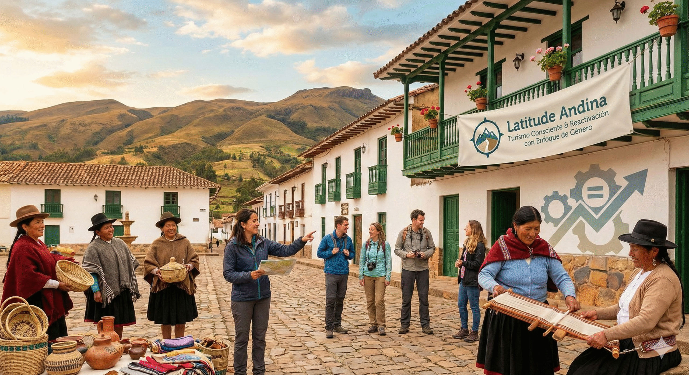
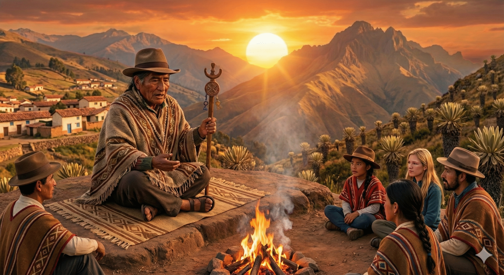
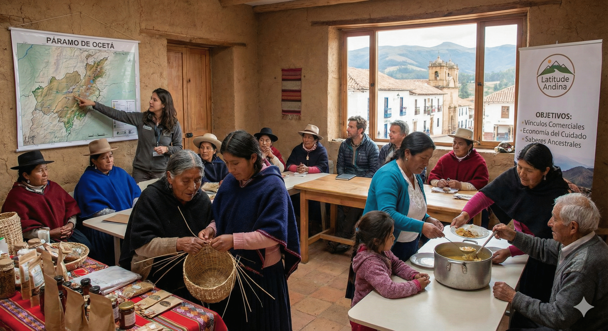
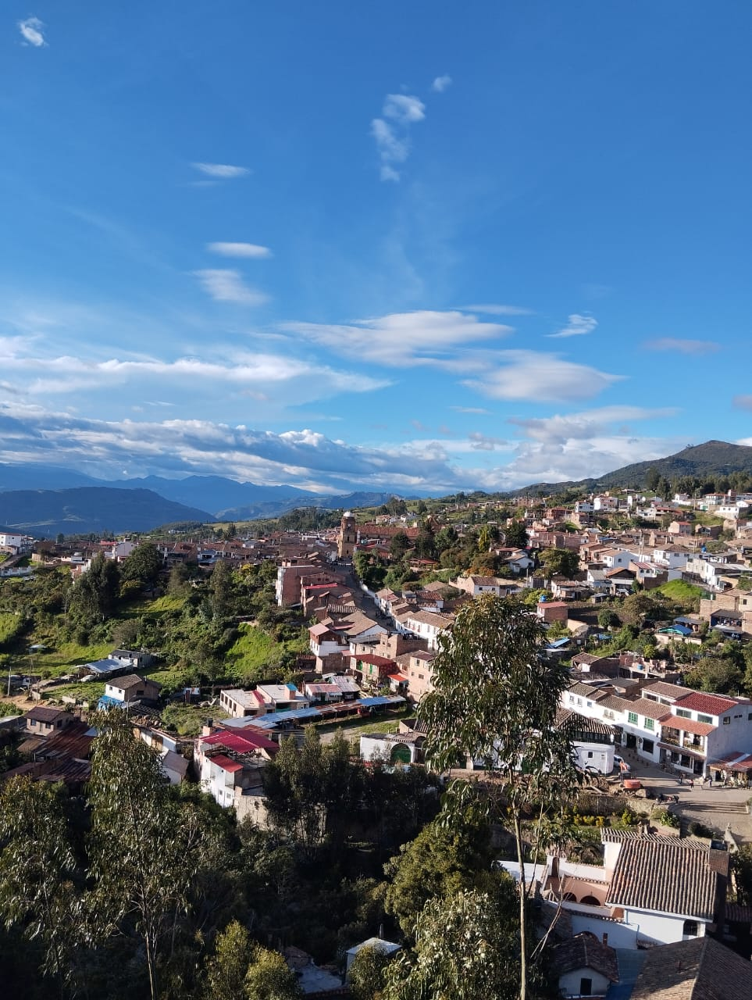
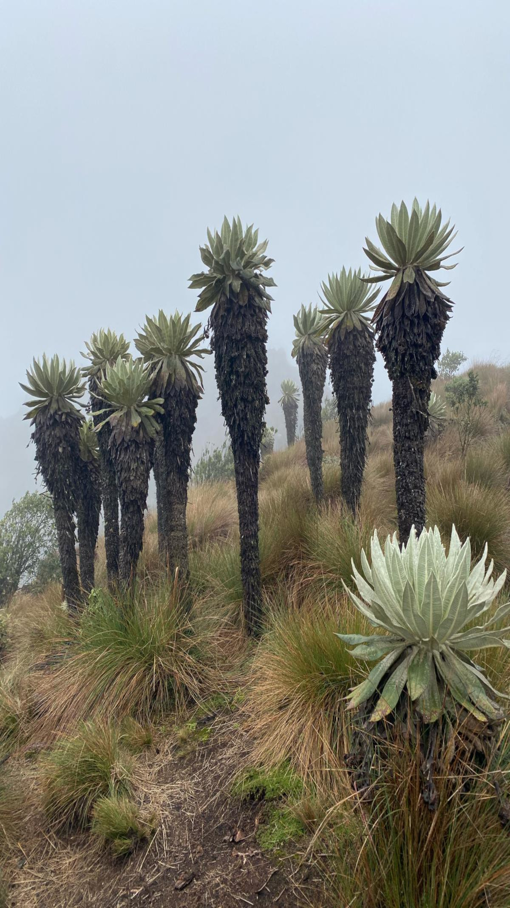

Más allá del viaje: turismo comunitario para la reactivación social y la defensa de nuestros páramos.

Generar los vínculos comerciales necesarios para la reactivación económica del sector turístico de Monguí, priorizando y fortaleciendo el rol de la mujer campesina y de hombres campesinos ex mineros en la cadena de valor.

Dinamizar la economía de las mujeres campesinas en el territorio, reconociendo y valorando su dedicación histórica a la economía del cuidado a través de las prácticas del turismo natural-comunitario.

Rescatar la admiración y respeto por los conocimientos empíricos y ancestrales de las mujeres y hombres del territorio, poniendo en valor su relación profunda con los paisajes naturales y las prácticas culturales locales.

Monguí no es solo un destino; es un territorio con una profunda riqueza histórica.
Mucho antes de ser la joya colonial que vemos hoy, estas tierras fueron habitadas por los Indígenas Muiscas, estrategas del comercio y la agricultura. Aunque el tiempo transformó su presencia física, su legado espiritual y de conocimiento sigue vivo en mujeres y hombres del territorio. A través de la tradición oral, nuestros guías locales han heredado saberes ancestrales que hoy pueden compartir con cada viajero.
En 1600, atraídos por la riqueza minera y el buen clima, los españoles fundaron la Villa de Santa Bárbara de Monguí. Desde entonces, la población destacó por su increíble producción artesanal.
Hoy, al caminar por sus calles, serás testigo de esa fusión de mundos. Monguí se alza como uno de los pueblos más bellos de Colombia, conservando tesoros como su Basílica y el Puente Calicanto, guardianes de una historia que sigue latiendo.
Actualmente, el acceso principal al Páramo de Ocetá desde Monguí presenta restricciones, aunque actualmente es posible visitarlo. Desde una mirada profesional e imparcial, hemos identificado factores sociales, económicos y ambientales complejos que han llevado a esta situación en los últimos años:
